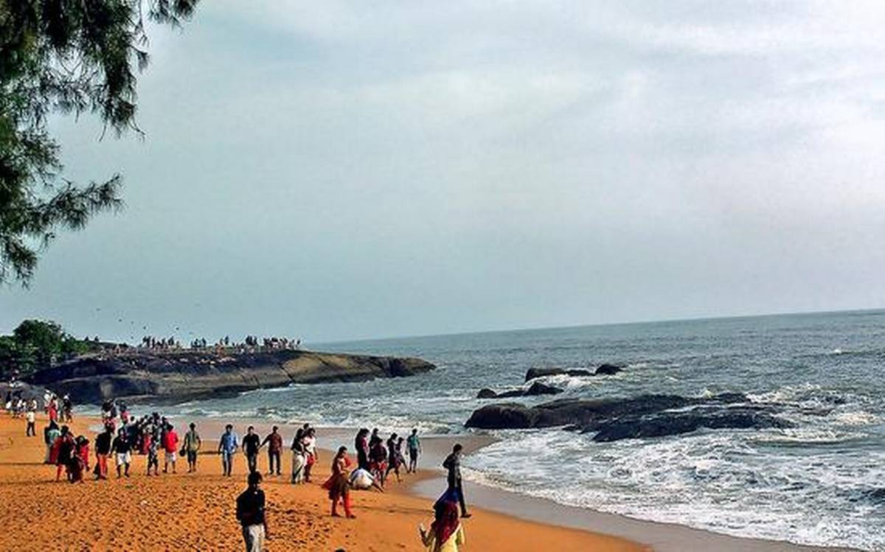
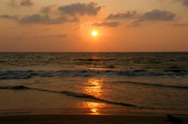

Kappad Beach
Kozhikode
Kappad, or Kappakadavu locally, is a beach near Kozhikode, in the district of the same name, Kerala, India.
A stone monument installed by government commemorates the "landing" by Vasco da Gama with the inscription, 'Vasco da Gama landed here, Kappakadavu, in the year 1498'.
In 2007 a Rs. 1.5 crore program to beautify the beach was launched by [Kerala] Tourism Minister Kodiyeri Balakrishnan. It is now completed and Kappad beach has a corniche and park. The park includes a restroom, restaurant and seating.[2]
The nearest major railway station is Koyilandy, about 10 km away from Kappad. The nearest airport is Calicut International Airport (CCJ), which is about 25 km from the town of Kozhikode. Private transport buses are available from the main bus stand, or visitors can reach the beach by stopping at Thiruvangoor on National Highway 66 between Kozhikode and Vadakara.
Gallery

